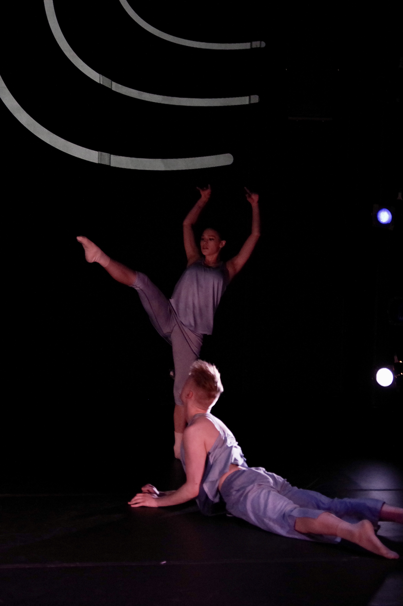
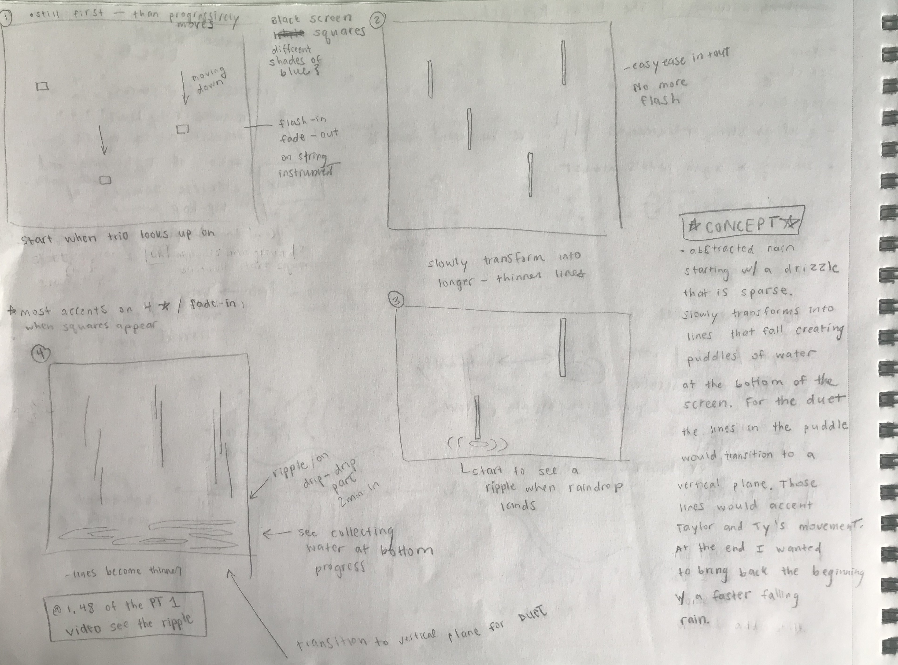
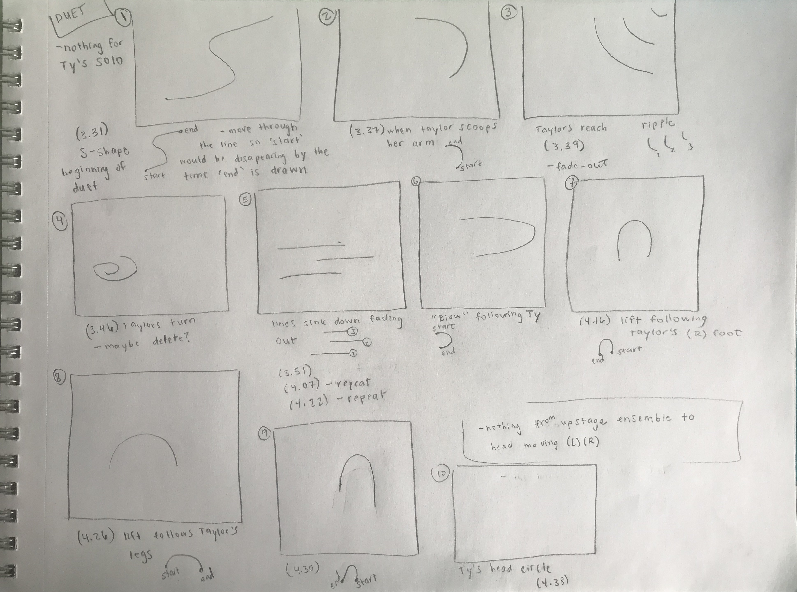
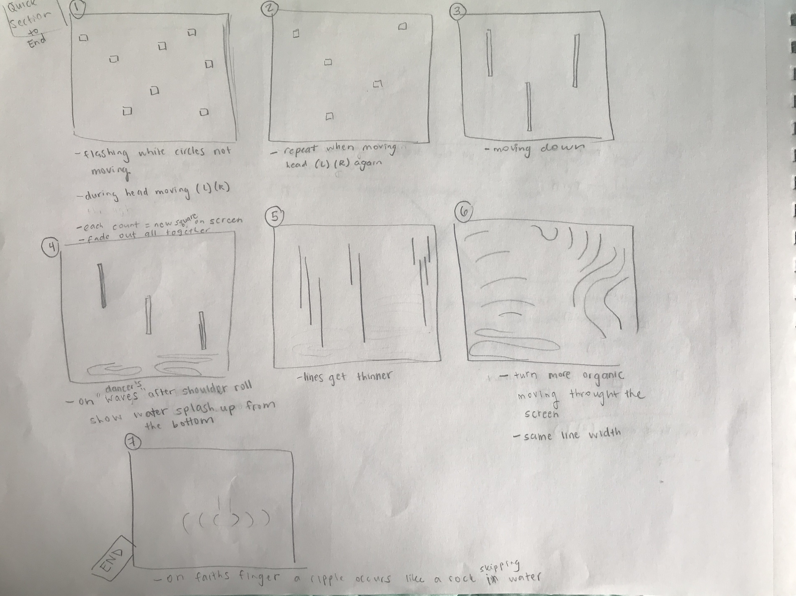
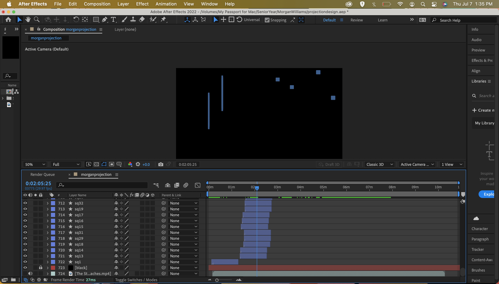
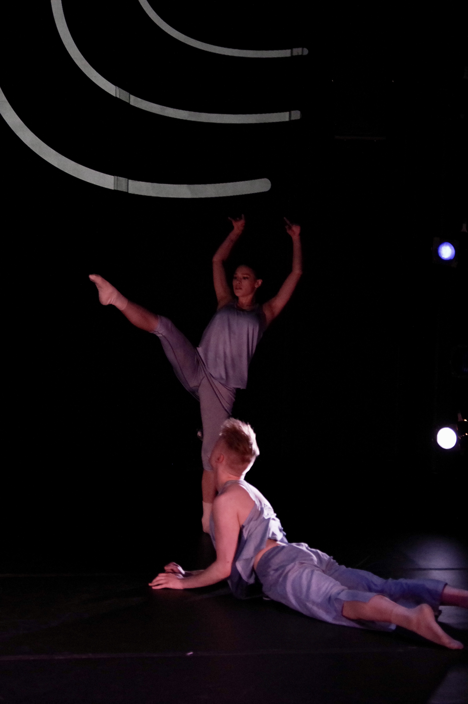
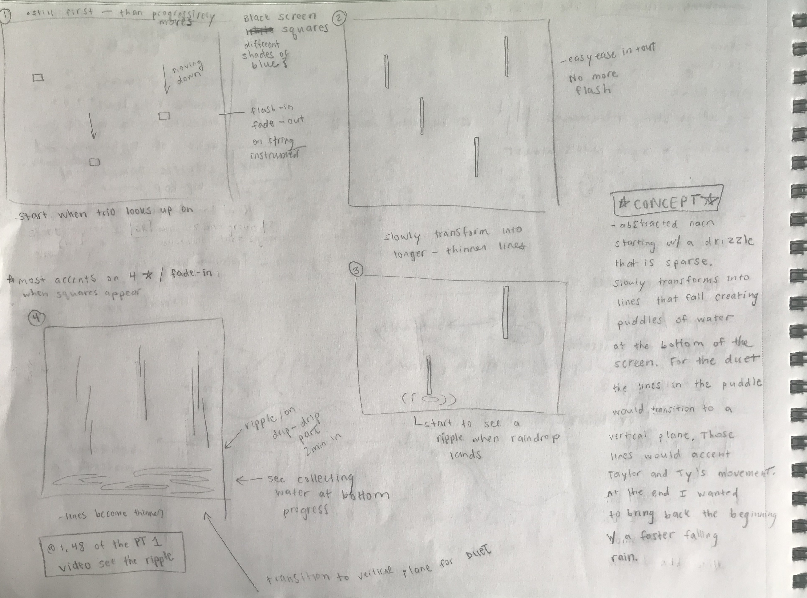
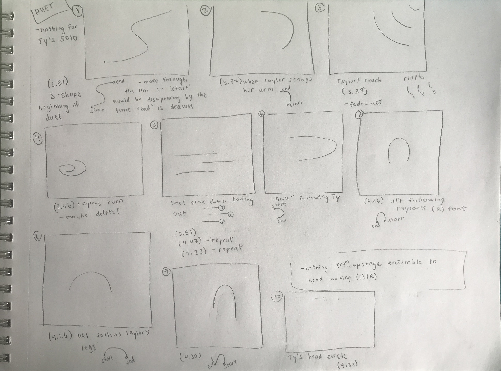
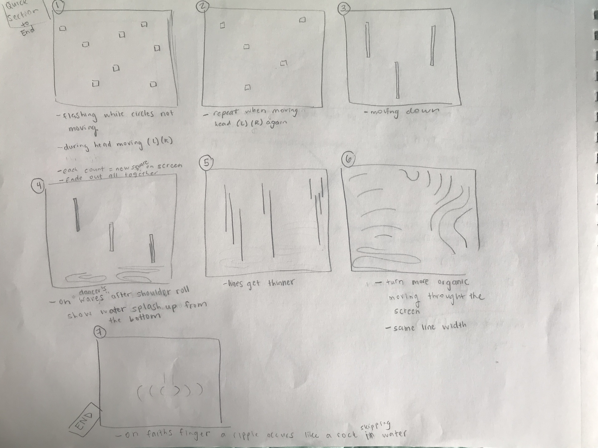
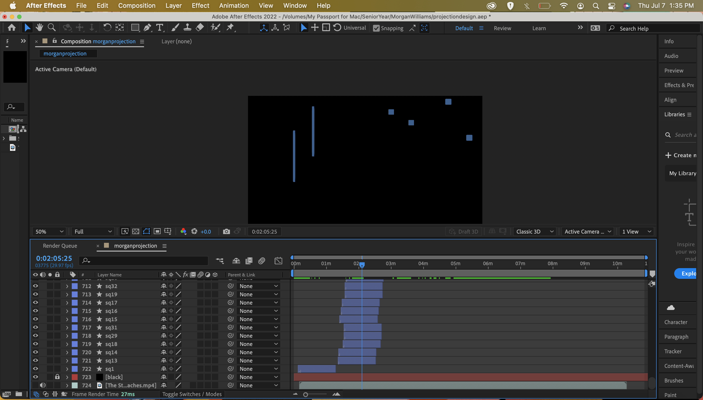

When it Rains, it Pours
Under the School of Theatre and Dance at Illinois State I created projection designs for modern dance choreographer Morgan 'Mo' Williams; director of Water Street Dance Milwaukee. He staged his work on pre-professional dancers as I worked closely with him and the dancers as creative assistant. My intention behind this piece was to make projection work that would further emphasize his choreography.
Costume Designer: Kari Rust
Lighting Designer: Ash Parra
Photography: Pete Guither


 








